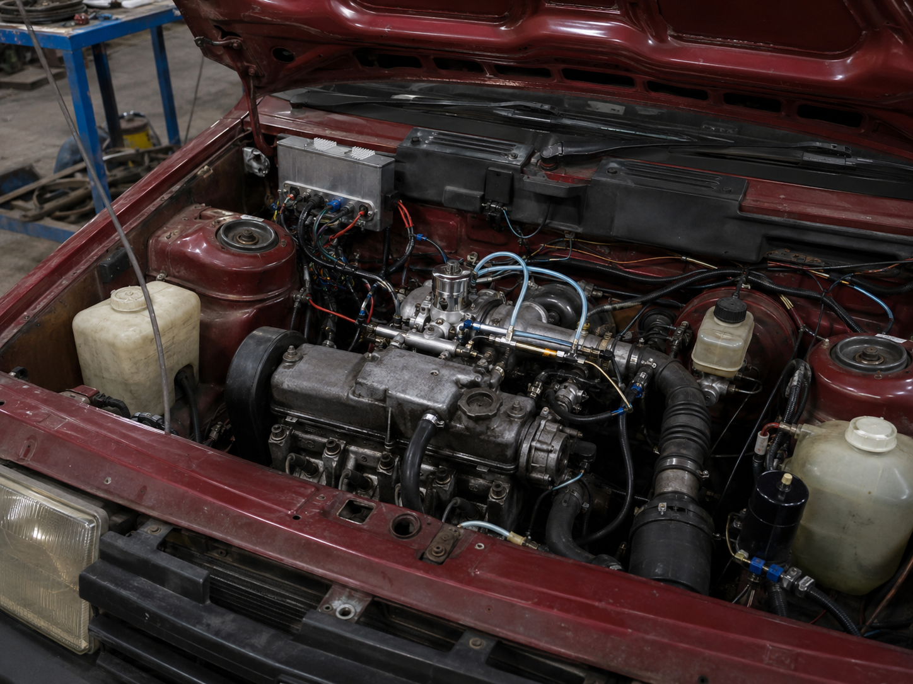

Eholkiv
Eholkiv — кивишская инженерная компания из Мири, основанная Ацо Хэвто в мае 2026 года. Компания занимается разработкой систем снижения расхода топлива для бензиновых двигателей и получила известность после серии опытов на автомобилях советского производства АвтоВАЗа.
Первоначальная идея Eholkiv заключалась в обработке старых двигателей таким образом, чтобы бензин поступал в мотор не в виде обычного жидкого потока, а в виде мелкодисперсного топливного тумана. В ходе ранних испытаний компания постепенно перешла от простейших распылителей к ультразвуковым форсункам, электронному управлению подачей, кислородному датчику в выхлопной системе и дополнительному водяному распылителю для охлаждения камеры сгорания.
История
11 Мая 2026: основание компании
В мае 2026 года Ацо Хэвто, побывав в России и оценив ситуацию с расходами на топливо, пришёл к выводу, что на рынке старых и дешёвых автомобилей появится спрос на технологии экономии бензина. После возвращения в Кивиш он основал в Мири компанию Eholkiv, сделав ставку на простую и дешёвую модернизацию бензиновых двигателей.
Изначально проект воспринимался как небольшой инженерный стартап с довольно спорной идеей: вместо создания нового автомобиля компания хотела доработать уже существующие двигатели и снизить расход топлива без сильной потери динамики.
Июнь 2026: первый демонстрационный прототип
Во время подготовки к строительству собственного производственного контура Eholkiv получила помощь от Tarifa Auto, согласившейся предоставить площадку для первых демонстрационных работ. Первый прототип был собран на базе Lada Samara 1. На месте карбюратора установили самодельную систему распыления с фильтрами, которую сам Хэвто сравнивал с принципом работы обычного освежителя воздуха.
Результат оказался слабым: на стендовых испытаниях расход составил около 11,8 л/100 км. После этого Eholkiv признала, что ранняя схема с постоянным распылением топлива почти не отличается по логике от старого карбюратора и не способна дать серьёзную экономию.
Июль 2026: переход к ультразвуковым форсункам
В июле компания полностью пересмотрела систему подачи топлива. Вместо дешёвых распылителей была разработана схема с ультразвуковыми форсунками, которые вибрировали с заданной частотой и превращали поступающее топливо в мелкий туман. Этот туман подавался во впускной коллектор, где смесь должна была сгорать более равномерно.
После перехода на ультразвуковое распыление расход снизился до 9,2 л/100 км. Хотя результат всё ещё не соответствовал первоначальным ожиданиям, он показал, что компания нашла более перспективное техническое направление.
Конец июля 2026: электронная подача топлива
Позднее в том же месяце инженеры Eholkiv определили новую проблему: даже ультразвуковая система продолжала подавать топливо слишком равномерно, без точной связи с реальной нагрузкой двигателя. Для решения этой проблемы в подкапотном пространстве изготовили на 3D-принтере отдельный защитный блок, куда установили плату Arduino. Она управляла электронным насосом и корректировала подачу топлива в зависимости от положения педали и оборотов двигателя.
На низких оборотах система уменьшала подачу топлива, а при повышении нагрузки увеличивала её. После этой доработки городской расход на тестах снизился до 8,2 л/100 км.
Осень 2026: кислородный датчик и обратная связь
Спустя несколько месяцев на испытания вывезли автомобиль семейства Lada Samara 1 Sedan. На этот раз Eholkiv добавила кислородный датчик в выхлопную систему и связала его с электронным управлением подачи топлива. Если выхлоп показывал богатую смесь, система уменьшала подачу через ультразвуковые форсунки. Если смесь становилась бедной и мотор начинал работать в более горячем режиме, подача увеличивалась.
Эта схема стала первым полноценным вариантом обратной связи в системе Eholkiv. Благодаря ей расход удалось снизить до 7,5 л/100 км.

Водяной распылитель и результат 7,2 л/100 км
Следующим этапом стала установка второго распылителя, подающего обычную воду в карбюраторный узел. Вода не использовалась как топливо: её задачей было охлаждение камеры сгорания и стабилизация работы двигателя при более экономичной смеси. Такой подход позволил снизить температуру работы мотора и уменьшить риск перегрева при бедных режимах.
На 1,5-литровом двигателе Lada Samara 1 Sedan городской расход был снижен до 7,2 л/100 км. Этот результат стал самым заметным достижением ранней программы Eholkiv на старых советских двигателях.
Объявление ETU-1.5
Через неделю после публикации результатов компания заявила, что все ранние испытания проводились на старых двигателях советского производства АвтоВАЗа, которые не позволяют полностью раскрыть потенциал новой системы. По мнению Eholkiv, древняя архитектура моторов ограничивала возможности экономии, даже после установки ультразвукового распыления, кислородного датчика и водяного охлаждения камеры сгорания.
После этого Eholkiv объявила о сотрудничестве с Tarifa Auto и начале разработки собственного двигателя ETU-1.5. Новый мотор должен был изначально проектироваться под современные системы подачи топлива, электронное управление смесью и водяное охлаждение камеры сгорания. Заявленной целью проекта стал городской расход не более 5 л/100 км.
Технологии
Ранние разработки Eholkiv строились вокруг идеи более точного управления сгоранием бензина. Компания постепенно отказалась от простого постоянного распыления и пришла к системе, где подача топлива зависит от режима работы двигателя и состава выхлопа.
- Ультразвуковое распыление — превращение топлива в мелкий туман перед попаданием во впускной коллектор.
- Электронный насос — регулирование количества топлива в зависимости от педали и оборотов.
- Кислородный датчик — контроль богатой или бедной смеси по составу выхлопа.
- Водяной распылитель — охлаждение камеры сгорания и снижение риска перегрева при экономичной смеси.
- Электронный блок управления — ранние прототипы использовали Arduino, позднее предполагался переход к промышленному контроллеру.
Прототипы и испытания
| Период | База | Основная доработка | Расход |
|---|---|---|---|
| Июнь 2026 | Lada Samara 1 | Простейшая система распыления на месте карбюратора | 11,8 л/100 км |
| Июль 2026 | Lada Samara 1 | Ультразвуковые форсунки и топливный туман | 9,2 л/100 км |
| Конец июля 2026 | Lada Samara 1 | Arduino-блок, электронный насос и подача по педали/оборотам | 8,2 л/100 км |
| Сентябрь 2026 | Lada Samara 1 Sedan | Кислородный датчик и обратная связь по выхлопу | 7,5 л/100 км |
| Октябрь 2026 | Lada Samara 1 Sedan, 1.5 л | Второй водяной распылитель для охлаждения камеры сгорания | 7,2 л/100 км в городе |
ETU-1.5
ETU-1.5 — заявленный двигатель Eholkiv и Tarifa Auto, разработка которого была объявлена после завершения первых опытов на автомобилях АвтоВАЗа. В отличие от ранних прототипов, ETU-1.5 должен был проектироваться не как переделка старого мотора, а как новый двигатель, изначально рассчитанный под технологию Eholkiv.
Ожидалось, что двигатель получит современную камеру сгорания, электронную систему управления, ультразвуковую подачу топлива, кислородные датчики и водяной контур охлаждения рабочей смеси. Целевым показателем был назван городской расход не более 5 л/100 км. На момент объявления проект находился на стадии разработки, а серийные характеристики двигателя ещё не были опубликованы.
Значение
Eholkiv стала заметной не из-за мгновенного успеха, а из-за последовательного улучшения результатов. Компания за короткий срок прошла путь от грубой самодельной схемы до ранней формы управляемой топливной системы. Её разработки рассматривались как попытка создать дешёвую альтернативу дорогой электрификации для стран и регионов, где старый бензиновый автопарк продолжает играть важную роль.
Особое внимание к компании было связано с тем, что её технология не требовала немедленной покупки нового автомобиля. Потенциально она могла использоваться для модернизации старых машин, такси, лёгкого коммерческого транспорта и бюджетных моделей.
Критика
Главная критика Eholkiv была связана с безопасностью и ресурсом. Скептики указывали на риск пожара, нестабильность самодельных электронных блоков, возможные проблемы с водяным распылителем зимой, коррозию, загрязнение форсунок и отсутствие длительных испытаний на пробеге. Дополнительные вопросы вызывало использование Arduino в ранних прототипах: для серийной машины такая схема считалась слишком простой и недостаточно защищённой.
При этом после достижения расхода 7,2 л/100 км критика изменила тон: проект перестали считать простой шуткой, но стали требовать ресурсных тестов, сертификации и полноценного промышленного исполнения.